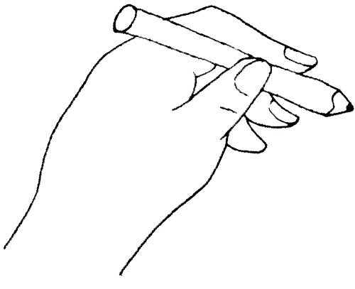
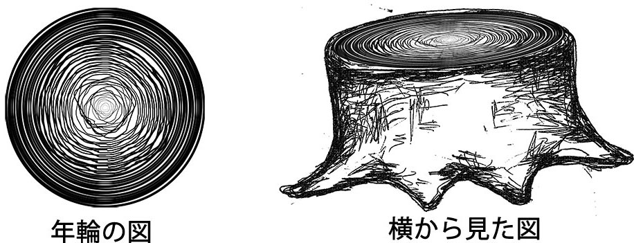

成長する円
株式会社カヤック 田島真悟
「継続は力なり」
という言葉があります
僕はこの言葉を
視覚的に表現しようと思いました。
人間、どんな技能でも
毎日繰り返し行うことで、
その精度は磨かれていきます。
今回は、「円を描く」
というシンプルな行為について
考えてみます。
これほど単純な技能でさえ、
10年間毎日繰り返せば徐々に綺麗な円が
描けるようになっていくでしょう。

しかし、利き手で描いてもつまらないので
“非”利き手で描くというルールを設定します。


DAY 1
最初はきっと、うまく描けずに
いびつな円になってしまうでしょう。
しかし、毎日毎日描き続け、
1年が過ぎ、
5年が過ぎ、
10年が経ったとき、
僕の腕はきっと、
きれいな円が描けるように
なっているはずです。
この10年間描き続けた円、
3652個を統合し、
“年輪”として表現します。

10年間にわたって描いた円を木の中央から、
年月を経るごとに外側へと輪が広がっていくように刻みます。
年月の重みを肌で感じられるよう、
この年輪をあしらった切り株の3Dモデルを
実際の木の大きさで樹脂加工し、具現化します。
観察してみると、
中央付近ではまだ歪んだ形だった輪が、
外側にいくほどに綺麗で整った輪に
なっていく姿がわかるはずです。
ちなみに、年輪は英語圏で“grouth ring”と呼ばれます。
すなわち成長する輪(円)という意味です。
本作品では、円としての精度が徐々に
磨かれていくという点において、
まさにこの言葉どおりの作品となっています。
(補足)
3652日分、全ての円を年輪に起こすと、
仮に輪と輪の幅を2mmと設定しても直径約15mの
切り株ができあがってしまい現実的ではないため、
実際には10日分ごとに円を集計し、
それぞれ各10個ずつの円の平均となるパスを出力する
といった処理を行おうと考えています。